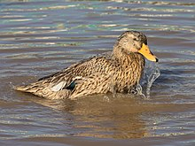

|
|
La plupart des races de canards domestiques sont issues du canard colvert (Anas platyrhynchos) avec lequel elles demeurent interfécondes, à l'exclusion du canard de Barbarie issu du canard musqué (Cairina moschata) et des canards d'ornement d'espèces différentes, souvent peu modifiés par rapport aux souches originelles sauvages.
Des spécimens de sarcelles, qui sont des petits canards, auraient été momentanément domestiqués par les Romains, si on en croit Charles Dessalines d'Orbigny : « ...Les Romains élevaient, dans des enclos assez vastes pour qu'elles pussent s'y ébattre, des sarcelles destinées à paraître dans leurs festins »1. Avant lui, Buffon (1707-1788) écrivait dans son œuvre Histoire naturelle : « On servoit souvent des sarcelles à la table des Romains ; elles étoient assez estimées pour qu’on prît la peine de les multiplier en les élevant en domesticité, comme les canards ; nous réussirions sans doute à les élever de même ; mais les Anciens donnoient apparemment plus de soins à leur basse-cour, et en général beaucoup plus d’attention que nous à l’économie rurale et à l’agriculture »2. Buffon lui-même citait Pierre Belon (1517-1564) : « Elle étoit en grande estime ez banquets des Romains ; et n’est pas moins renommée ez cuisines françoises, tellement qu’une sarcelle sera bien souvent aussi chèrement vendue comme une grande oye ou un chapon ; la raison est que chacun cognoist qu’elle est bien délicate »3. Les oiseaux en question sont soit des sarcelles d'été soit des sarcelles d'hiver.
Au xiiie siècle, les canards issus du canard colvert sont domestiqués pour leur chair en Europe occidentale.
En France, selon l'arrêté du 11 août 2006 fixant la liste des espèces, races ou variétés d'animaux domestiques4 sont considérées comme domestiques en droit les canards suivants :
- les races et variétés domestiques du canard colvert (Anas platyrhynchos) ;
- les variétés bleue et noire du canard de Laysan ou sarcelle de Laysan (Anas laysanensis) ;
- la variété argentée du canard des Bahamas ou pilet des Bahamas (Anas bahamensis) ;
- les variétés blonde et blanche du canard carolin ou canard branchu (Aix sponsa) ;
- la variété blanche du canard mandarin (Aix galericulata) ;
- les races et variétés domestiques dites canards de Barbarie, du canard musqué (Cairina moschata).
|
|

Un canard domestique (Anas platyrhynchos) fait sa toilette et s'éclabousse dans un étang à Don Det, Si Phan Don, Laos. Décembre 2021.
|